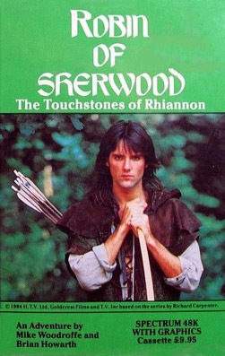
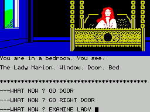

Robin of Sherwood


{kind=link}

| Publisher: | Adventure International |
| Price: | £9.95 |
| Year: | 1985 |
| Source: | CRASH, Issue 21 |

If you’ve ever wondered how long it takes to write this column the answer is very simple — a long time. Between writing programs of my own, playing these here adventures enough to form some opinion on them and writing something which appears coherent, there’s barely enough time to laugh at Top of The Pops. But all’s well this late Thursday evening as it’s time to say one or two nice words about an awfully good program. Touchstones of Rhiannon is an adventure of Robin of Sherwood and is based upon the TV series by Richard Carpenter, yes, that’s right, the one with the haunting Clanad song. Even if, like myself, you more monitor TV rather than watch it I’m sure you’ll recognise heart-throb Michael Praed who played Robin in the HTV series on the cassette cover and may well be interested in the full colour poster offer from Adventure International inside.
If you buy this game, and, judging by the success of Gremlins from the same people, many of you will, let me forewarn you of an unnecessary irritation on loading. After about two minutes of loading the screen puts up some information. Unfortunately no loud buzz or other warning draws your attention to this fact and it is so easy to let the tape run on without you stopping it that many of you will be caught by it even after reading this. This tip is for those who’d rather read a free newspaper than sit and watch a game load.

When the game loads you are confronted with a dire situation with you, Robin, your accomplices Will Scarlet and Much the miller’s son locked within Nottingham castle. The layout of the screen is pure Brian Howarth with the lower scrolling input part separated from the picture, short location description and things you can see above. When picking up an object it disappears from the list of items you can see and the screen gives a flash as it has done ever since the days of Digital Fantasia. Anyway, enough of the rudiments of adventuring and on to the story, one which I liked as I think the story of Robin of Sherwood is very much suited to the medium of adventuring.
The Prophecies of Gildas have it that a Hooded Man shall come to the forest of Sherwood and meet Herne the Hunter, Lord of the Trees, and do his bidding. The power to wield great good or evil shall be his and the guilty shall tremble. Over one hundred years after the Normans conquered England rebellion still flared like embers from a dying fire. One such rebellion was led by Ailric of Loxley who believed in the ancient legend of Herne the Horned God of the forest and his son Robin who would lead the English against the Norman tyranny. At the time of this adventure Ailric is dead, Robert de Rainault is High Sheriff of Nottingham, King Richard is busy with the crusades leaving the evil Barons to run the country and it would seem all rebellion is over. However, none had bargained for the appearance of the Hooded Man. We join the Hooded Man in a cell as he has been caught breaking the law of venison by Sir Guy of Gisburne and now awaits a terrible punishment. You need to escape from there and from Nottingham Castle as quickly as you can (in Robin Hood style, in fact) whereupon Herne will appear and give instructions.
Due to the vast amount of memory used to serve up the superlative graphics the range of vocabulary the program can accept is limited. Having said this an imaginative person may soon be out of the castle and free to roam Sherwood forest within a few moves. I’d say that over all the difficulty of this adventure is about right as it is no pushover but not so difficult as to make you want to forget the whole thing. This game has you thinking hard about its problems long after you’ve switched off the power to the computer. One curious aspect of the program’s input analysis is its tendency to ignore most of the input it does not understand to the extent that you soon realise that nothing has happened unless something in the top half of the screen has changed. This rather minor shortcoming is easily offset by a very good EXAMINE command which proves both useful and essential if Robin is to make any headway. The characters, are wooden, but, once again, what can you expect in a program which displays graphics that make you proud to be a Spectrum owner?
Well, leaving the best till last, what about the graphics? In short they are astonishingly good. Imaginative and highly artistic pictures greet just about every frame and even the ones depicting Sherwood forest, which may have become dull, really give the feeling of wandering through a vast expanse of trees. Intelligent design is the order of the day.
Robin of Sherwood and the Touchstones of Rhiannon, unlike many other TV tie-ins, is a superb implementation of the original. The graphics are nothing short of stunning and the plot maintains your interest throughout. I liked Gremlins a lot but rather wished I had seen the film. However Robin of Sherwood is a story familiar to everyone and this game is a magnificent interpretation of the theme. If you liked Gremlins, or if you don’t normally play adventures, take a look at this one.
COMMENTS
| Difficulty: | Testing |
| Graphics: | The best! |
| Presentation: | Good (but white glares on a colour TV) |
| Input facility: | Sentences |
| Response: | Quick |
| General rating: | An enjoyable challenge |
| Atmosphere: | 9 |
| Vocabulary: | 6 |
| Logic: | 7 |
| Addictive quality: | 10 |
| Overall: | 9 |